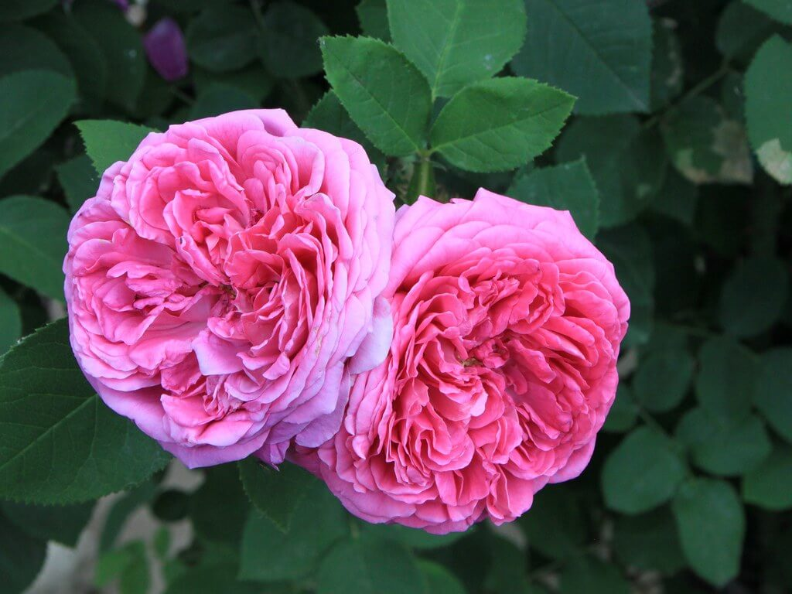
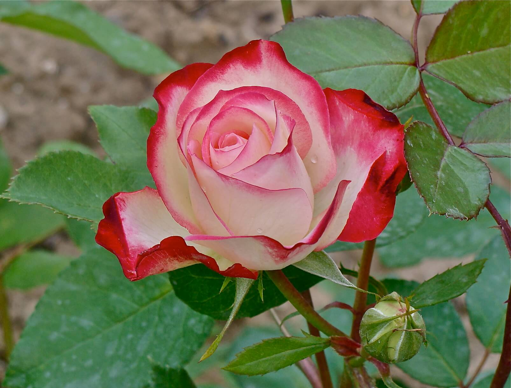

Flowers are very Beautifull and have many kinds
| Fossilised roses have been found around the world, proving the existence of this flower in pre-historic times. Petrified rose wreaths were discovered in the tombs of the ancient Egyptians signifying the importance of spiritual well-being that they attributed to the rose |  | Fossilised roses have been found around the world, proving the existence of this flower in pre-historic times. Petrified rose wreaths were discovered in the tombs of the ancient Egyptians signifying the importance of spiritual well-being that they attributed to the rose | |
| Don’t know a tea rose from a shrub rose? Here is how to tell the difference.There are so many varieties of roses it is difficult for the backyard gardener to sort them into categories. Let’s say there are seven main types to pick from and make your garden bloom both high and low, single bloom |  | Don’t know a tea rose from a shrub rose? Here is how to tell the difference.There are so many varieties of roses it is difficult for the backyard gardener to sort them into categories. Let’s say there are seven main types to pick from and make your garden bloom both high and low, single bloom | |
| Don’t know a tea rose from a shrub rose? Here is how to tell the difference.There are so many varieties of roses it is difficult for the backyard gardener to sort them into categories. Let’s say there are seven main types to pick from and make your garden bloom both high and low, single bloom | Don’t know a tea rose from a shrub rose? Here is how to tell the difference.There are so many varieties of roses it is difficult for the backyard gardener to sort them into categories. Let’s say there are seven main types to pick from and make your garden bloom both high and low, single bloom |